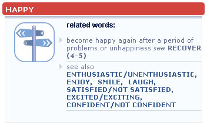

Unlike ordinary dictionaries, which you probably use to look up words you do not know to find out what they mean, the Longman Language Activator starts with words you do know and takes you to new words and phrases to help you produce good, appropriate English.
The words in the Longman Language Activator are organized into groups, based on common words (called keywords), which express basic ideas. For example, all the words that are connected with 'happy' - glad, pleased, delighted, etc. - are grouped together under the keyword HAPPY. Select the keyword 'HAPPY' by typing in the search box or by scrolling through the sliding Activator index.

See also: